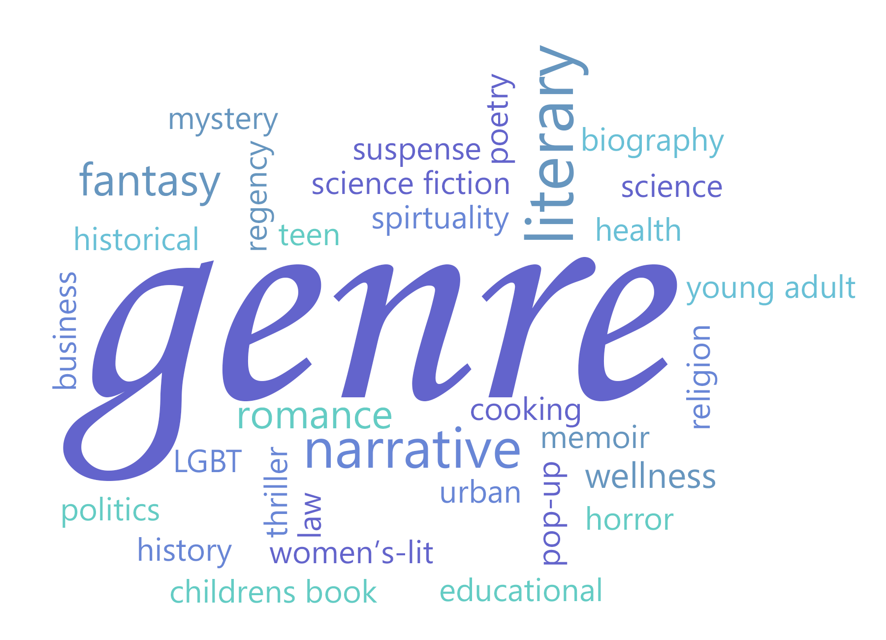

How to make reading a habit?
– George R.R. Martin
Why is it important to inculcate a reading habit?
As we all know reading regularly has a lot of benefits, some of them are:
-It helps build our vocabulary: Any kind of reading helps improve your vocabulary. Constant exposure to new words, looking up its meaning and seeing in what context they are used helps you learn the words faster.
-Enhance writing skills: Reading a wide range of books helps you get familiar with different writing styles. It is also one of the best ways to master punctuation, especially the innocuous-looking, but complicated, comma.
-Improves concentration and focus: When you're reading a book, you're completely focused on getting a better understanding of the storyline. You get completely immersed in the book.
-Comparatively cheaper source of entertainment: You don’t really have to buy a new book every time you want to read. You can issue books from a nearby library or borrow it from a friend. A lot of books are also available on the internet for free. This makes reading comparatively cheaper to other sources of entertainment. There’s an added advantage of not having to wait for a commercial to get over to move on to the next chapter.
-Mental stimulation: Activities that stimulate the brain, such as reading is known to help slow down cognitive decline in people.
How should you start reading?
There are plenty of people who want to get into reading but all of them face a common problem- “How do I start reading?”
Do’s
-You can start by creating a distraction free environment so that you can continue reading without getting disturbed or distracted. It also helps you focus better.
-Try to read a minimum of 10-20 pages every day. It’s a small but not so intimidating task and so it doesn’t pressurize you a lot.
-You can also take part in reading challenges. Reading challenges can accelerate your reading motivation by a large extent and challenging yourself is considered to be a great way to develop a new habit.
-You could join a book club or get a reading partner. A reading partner helps you be more accountable to your reading goals and you can discuss the book with them while you're reading it or once you're done reading the book. Whe you join a book club you get to meet like-minded people and you can discuss your opinions on your favourite books with them.
-Invest in tools that encourage reading. For most of them today mobile apps, tablets, eBooks,etc have proven to be extremely helpful. This is because everyone is slowly shifting to a digital platform and they prefer using it to stay on top of most of their goals.
Don’ts
-Don’t make towering reading goals. If you aren’t a voracious reader you usually end up exhausting yourself and it might result in you not liking the particular activity anymore. That’s why you should set an easily attainable reading goal which makes the activity more enjoyable and less stressful.
-Don’t read books just because everyone else is reading them.
-Don’t try to finish reading a book that you clearly aren’t enjoying. Instead of trying to power through it you could just put it down and find a book that suits your taste. 
How to know which book to read?
-Curated lists can be helpful.
-Go through online reviews of the book you want to start reading.
-Reading the contents on the back cover of the book helps too.
-You can take suggestions from the people around you if you aren’t able to decide on which book to read.
-If you enjoy a book from a particular author, you can look up whatever else they have written.
-Try reading different genres to find out which one suits you the best.
Happy reading!